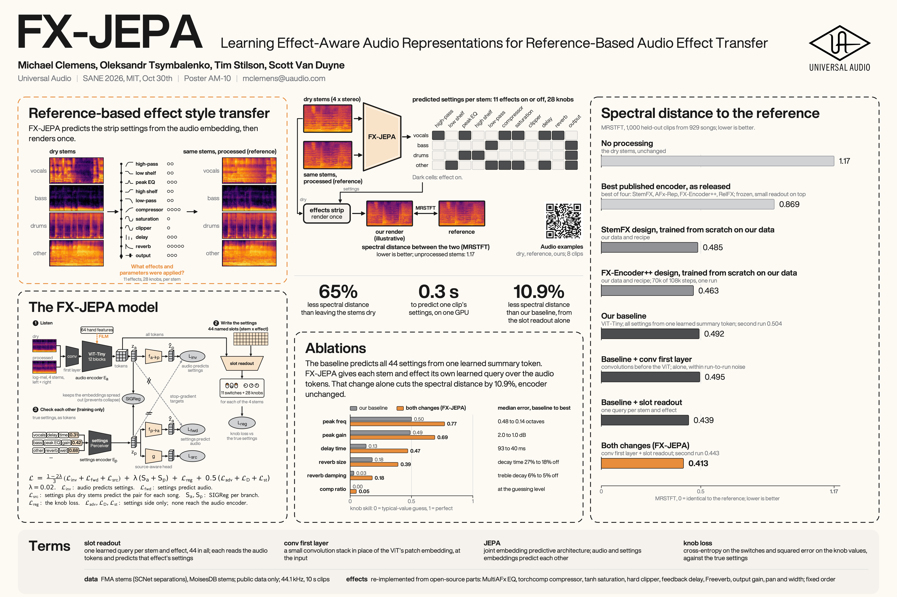

FX-JEPALearning Effect-Aware Audio Representations for Reference-Based Audio Effect Transfer
One learned readout per stem and effect cut the spectral error by 10.9% against our baseline.
Universal AudioSANE 2026, MIT, 30 October 2026Poster AM-10

The task and the main result
A mix engineer with a reference in hand often wants their own dry stems to sound like it, which in practice means working out the effect settings that produced the reference. FX-JEPA takes a set of dry stems and the same stems after processing, and predicts the chain that connects them, i.e., for each of 4 stems (vocals, bass, drums, other), which of 11 effects are on and where their 28 knobs sit; the dry stems are then rendered once through that chain. In its current form the task is chain inversion, since the reference is the same stems run through our own effects strip and is neither a different song nor a finished mix. Our main result concerns the readout, the part of the model that turns what the encoder hears into settings. Our baseline reads every setting from one learned summary token, so the answer about the vocal delay has to share that one vector with the answer about the bass EQ and every other stem and effect, and giving every stem and effect its own named slot, 44 in all, cuts the spectral error of the render by 10.9% against our baseline. We measure that error as MRSTFT, the multi-resolution STFT distance between our render and the reference, over all 8 stem channels (4 stems, left and right), on 1,000 held-out clips from 929 songs not seen in training; lower is better, and handing back the dry stems unchanged scores 1.17. Adding a small conv first layer under the transformer, which we introduced because the baseline's linear patches cannot mark where an echo starts, gives our best model, 16% below our baseline (a second training run gave 10%). That model was also trained with corrected vocals-clipper labels and the baseline was not, so the 16% includes a label change we have not isolated. The FX-Encoder++ design, trained from scratch on our data, is level with our baseline (within run-to-run noise), one run at 70k of 108k steps.
We do not credit the improvement to the JEPA objective, because on an out-of-domain held-out test scored once with earlier models, JEPA training tied the same model trained on the knob loss alone. Published effect encoders, with their released weights frozen and a small readout trained on top, score about twice our error, yet the same designs trained from scratch on our data land near our baseline, which suggests that most of that gap comes from training. The model returns one chain per stem. Since no users or workflows have been studied, what an engineer would do with that output remains untested.
Architecture
How the model reads the audio, every term defined, the four published encoders we compare against, and questions people ask.
Read the walkthroughResults
MRSTFT for every model, the second runs, which part helped, every knob's range and how it is scored, and how MRSTFT is computed.
Read the resultsListen
Dry stems, the processed version, and our render from the predicted settings, side by side.
Open the playersWhat we do not claim
- The same 1,000 held-out clips were used to select the models; songs outside this set have not been tested.
- The best model was trained with corrected vocals-clipper labels; our baseline was not.
- No listening test has been run on these models; the score is spectral only. Statements about what is audible come from our own listening, not a controlled test.
- No users or engineers have been studied; the workflow around the model is untested.
- Compressor ratio, attack and release remain near the guessing level.
- The abstract's 17% was a different test: earlier models, an out-of-domain Pedalboard set, against StemFX's frozen encoder with our readout.
- Delay feedback and reverb width are also near guessing. In our own listening, not a controlled test, reverb width is close to inaudible on our material.
Contact
Michael Clemens, mclemens@uaudio.com. Questions about the work, the numbers or the examples are welcome.